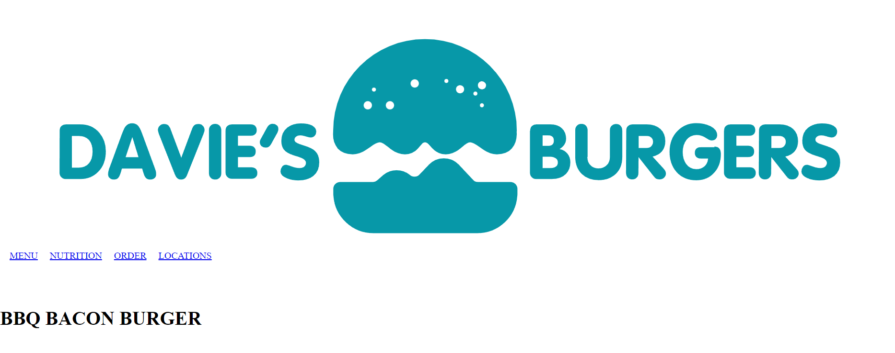
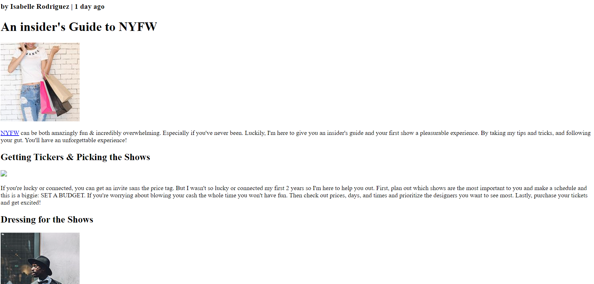
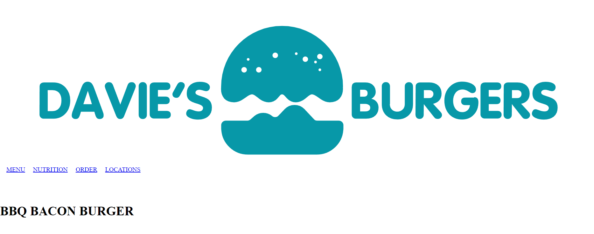
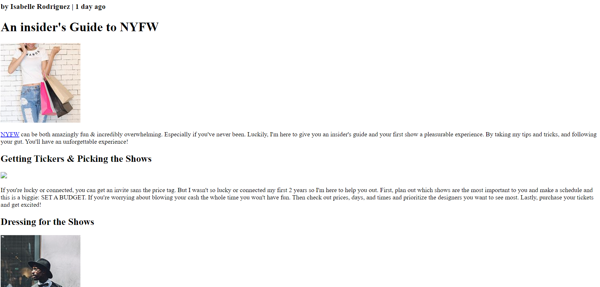
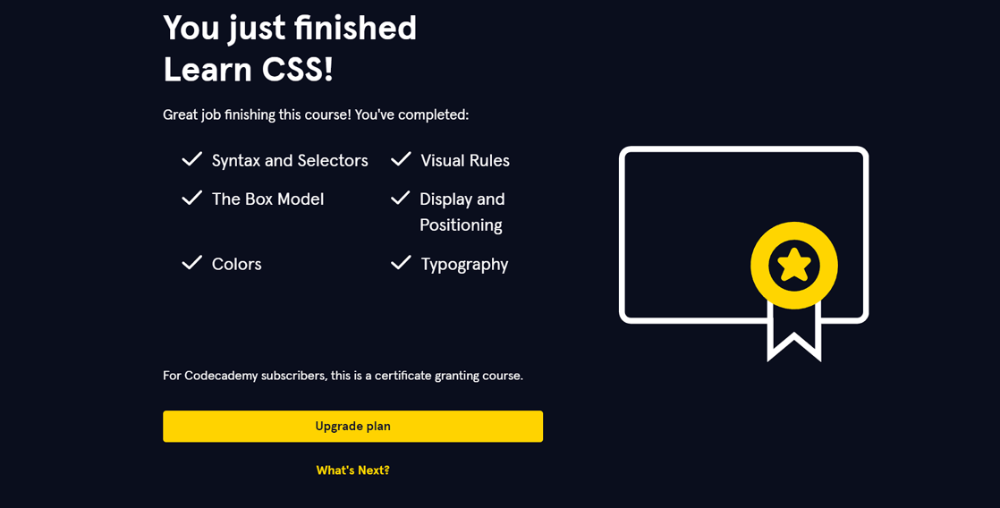
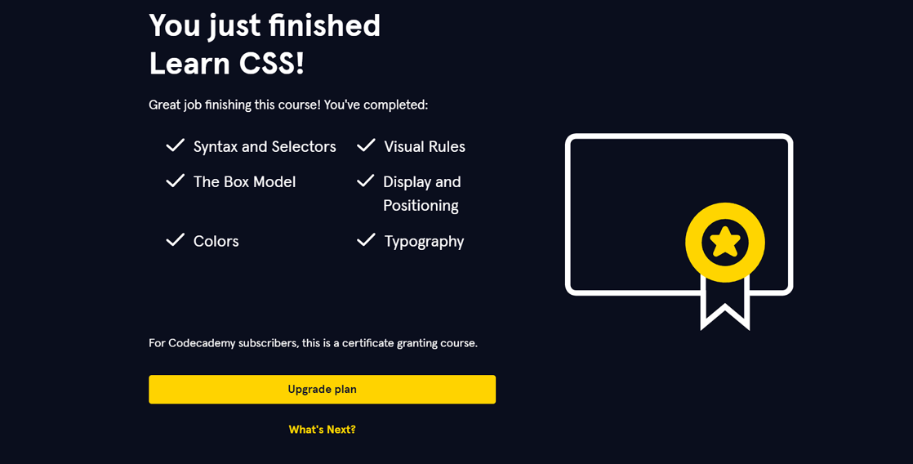

Welcome to my Portfolio

My name is Zachary B. Labor, and I am 19 years old. I live in Mambago-A, Island Garden City Of Samal, Davao del Norte. I graduated from Penaplata Elementary School Sped Center during my elementary years. For junior high school, I completed my education at Assumption Academy Of Penaplata Inc. Later, for my senior high school, I graduated from Holy Cross Of Babak Inc. Currently, I am a second-year BSIT student at the University of Immaculate Conception. While I am still in the process of developing my programming and website development skills, I firmly believe that I will excel in these areas someday.
In this section, This is the area I put all the activities I do in this subject Web development.
 



The photo above is proof of my completion of the HTML activities. During these activities, I've learned a lot, such as the basics of HTML on how to insert images in HTML, how to create paragraphs, how to make lists, how to create tables, what are the attributes, and a lot more. At first, it was hard and challenging, but it has become enjoyable, and it gets a less easier as time goes on once you understand the structure of HTML. Ultimately, the knowledge gained from these activities is essential for creating websites.
 

The photos above are proof of my completion of the CSS activities. During these activities, I have learned a lot, especially the basics of CSS when it comes to learning CSS on Codecademy, because I feel like I needed to learn everything there. Its hard and challenging but there where solution if you can't solve the problem given. The topics covered include syntax and selectors, visual rules, the box model, display and positioning, colors, and typography.
For me, CSS is more challenging compared to HTML because, honestly, I struggle with design since I have a limited imagination when it comes to designs. However, with the help of these activities, my imagination about designing using CSS has increases, and I've realized that I can create a lot of designs for my future projects.
Overall, CSS is indeed more challenging than HTML, but it is satisfying and enjoyable when you can beautifully design your website.